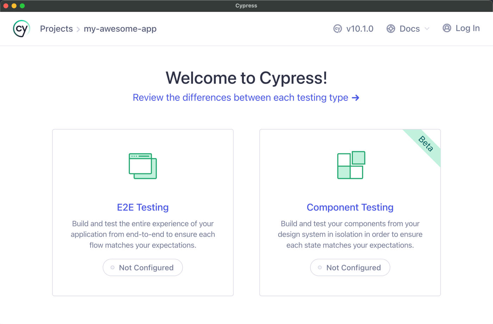

Cypress
Component Testing
Cypress: Component Testing
- Provides a testable component workbench
- Isolates the component to test how it works
- Supports several frameworks
- Angular
- React
- Vue
- Svelte
Component Explorer
Tools for Component Testing and CDD
- Storybook
- Playground
- Styleguidist
- Chromatic
- Vue-play
- etc.
New: Cypress Component Testing (Beta)
E2E vs Component Testing
The same test runner, commands, and API

E2E
- Rendering within a complete website
- Tests match the user experience
- Can be used for integration testing as well
- Can be written by developers or QA Teams
- More difficult to set up, run, and maintain
- Testing certain scenarios require more setup
Component
- Using a development server
- Easier to test components in isolation
- Easy to set up specific scenarios in tests
- Fewer dependencies on infrastructure
- Fast and reliable
- Do not call into external APIs/Services
- Usually written by developers working on the component
Setup and demo
Getting started
Install:
yarn add --dev cypressnpm i --save-dev cypressConfiguring:
npx cypress openChoosing Component Testing and follow the process (Framework, Configuration files, Browser)
Our first test
Open component testing directly:
npx cypress open --componentUsing cy.mount() instead of cy.visit():
- Template code inside a string
- Config object:
MountConfig<T>(extendsTestModuleMetadata) - Use the same API to make changes and check them
Demo
Storybook vs Cypress Component Testing
- Differences?
- Which to choose?